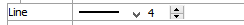

Pline
Description
A bar plot of selected joint, zone, or gridpoint values along a line. This plot is displayed on top of any other geometric plot (it is not a chart plot). The data sampling is defined by the start, end and number attributes. The values plotted are taken fom the object nearest the points on the line. There is no averaging or projection to the sampling point location.
Attributes
Value
Select which values are to be displayed in the chart. The options are listed in the table below.
| Block (Zone) | |
|---|---|
| Displacement | |
| Displacement-X | |
| Displacement-Y | |
| Sig1 | |
| Sig2 | |
| Stress Normal | |
| Stress Shear | |
| Stress-XX | |
| Stress-XY | |
| Stress-YY | |
| Velocity | |
| Velocity-X | |
| Velocity-Y |
Start

Specify the starting x y coordinates for the scanline.
End

Specify the end x y coordinates for the scanline.
Number
Specify the number of points along the line to sample.
Marks

Controls appearance of axis marks.
Contour
The attribute appearing in this position is a Contour, depending on the “Value” selection. Refer to the standard contour control description for details.
Line
Set line properties for the plot item. See the standard line control description for details.
Points
Select to display markers at the location os the sampling points.
Mark
If points is selected this tool allows you to select the marker style, size and color.
Legend
Set display of the item in the plot legend. All plot items, at minimum, have a Title attribute.
Legend: Show (checked) all information about the plot item in the legend.
Title: Show (checked) the title of the plot item in the legend. The “Alias:” field may be used to specify a custom title for the item.
Size: Set the size of text in the legend.
Font: Set the font face used for the text.
Style: Set the text style (the options are normal, bold, italic, bold-italic).
Color: Set the text color.
Beneath Title, the pline Chart plot item also provides controls in Legend for Series and Vs. The sub-attributes of each are the same as those for Title.
| Was this helpful? ... | UDEC © 2018, Itasca | Updated: Mar 15, 2024 |